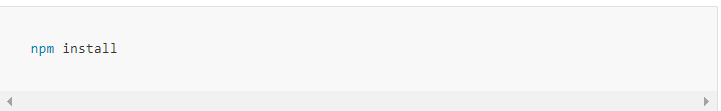
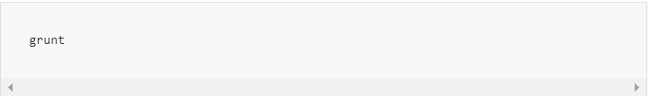
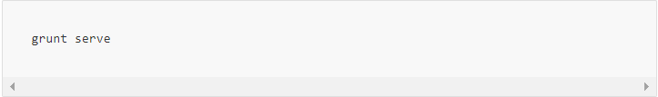

- Welcome
- Installation
- FAQ
- Options
- Classes
- Events
- Built-in Plugins
- Plugin API
- Sass Styles
- External Libs
- Contributing
- Changelog
- Contact
Getting Started
This project is hosted by Smashing Boxes but so many awesome contributors have
had a big impact on the code. Thanks to all the amazing people who spent hours
helping me with the development and teaching me new tricks!
If you are looking to support Owl Carousel with your amazing ideas (or just fix some nasty bugs)
then go to Github and fork the project.
Some tips for contributors
Owl Carousel is built around Grunt, Bower and Assemble frameworks. If you are not familiar with
those tools please visit:
• Node.js
• Yeoman
• Grunt
• Bower
• Assemble
Installation dependecies/p>
Open Terminal, go to folder with project and type:
Then install bower components
Grunt Tasks
The default task runs two other tasks: dist and docs. Type grunt to run default:
Now that the whole project is generated, run the last grunt task:
This creates localhost server and opens docs in your default browser. watch tasks will look for any
changes and will automatically update the project and reload the browser.
Now you are ready to make some cool updates by yourself. Owl project is in src folder. Also dont
change src/css/*.css - all css files are generated from sass.
Happy Coding